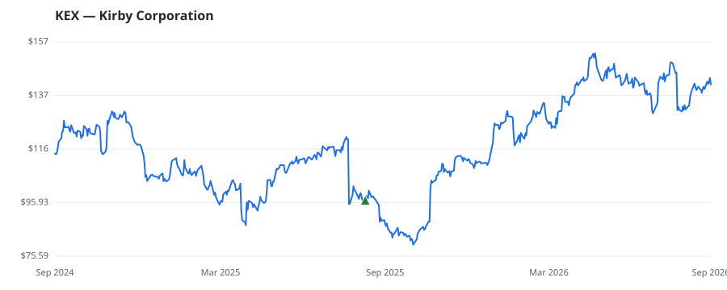

bullish · bearish · n/a — dots: price>SMA10 · SMA10>SMA50 · SMA50>SMA200 · up>down volume (20d)
Transportation · mid cap
Members who bought KEX earned a dollar-weighted +45.9% from their disclosure dates, versus +19.7% for the S&P 500 over the same holding windows (+26.2% alpha).

▲ green = a disclosed purchase · ▼ red = a disclosed sale (plotted on disclosure date)
Kirby Corp is a domestic tank barge operator, transporting bulk liquid products throughout three United States coasts. The Company transports petrochemicals, liquid cargoes, inland waterway systems, and dry bulk cargoes. The Company conducts operations in two reportable business segments: The Marine transportation segment which provides marine transportation services, operating tank barges and towing vessels transporting bulk liquid products, and the Distribution and services segment, which provides after-market service, and genuine replacement parts for engines, transmissions, reduction gears WATER TRANSPORTATION · website
| Revenue | $3.4B | Net income | $355.4M |
|---|---|---|---|
| Operating income | $496.3M | Diluted EPS | $6.33 |
| Assets | $6.0B | Equity | $3.4B |
| Member | Chamber | Out-performer | Disclosed buys $ | Return on buys |
|---|---|---|---|---|
| Angus S King, Jr. | senate | yes | $8K | +45.9% |
Disclosed $ figures are bracket midpoints — filings report ranges (e.g. $1,001–$15,000), not exact amounts.
This name produced 0.0% of the ranked funds’ total alpha.
| Fund | Fund alpha vs SPY | Position | % of book |
|---|---|---|---|
| Mountaineer Partners Management, LLC | +55% | $12M | 5.9% |
Hedge data: SEC EDGAR 13F · ranked funds beat SPY in >50% of their quarters · fund alpha = mirror-portfolio return minus SPY.